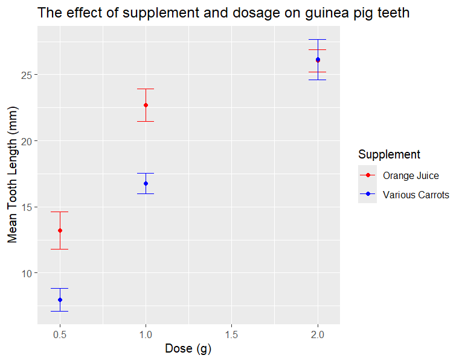

R 101
R 101 for biosciences
This is a basic introduction to the coding language known as R. Our first bit of good news is that R has a fairly intuitive graphical interface, called R Studio, so we don’t have to faff about with command lines to use it. Our second bit of good news is that it’s very straightforward to select, order, and analyse data, and make some really beautiful graphs. Let’s get started!
Downloading and installing R
YSJ students can download R and RStudio onto a University device via [AppsAnywhere] (https://appsanywhere.yorksj.ac.uk/): students at other universities may have a similar arrangement, please contact your IT service for details. Use the following guide for personal computers.
Go to https://posit.co/download/rstudio-desktop/ , scroll down a little, and click on “DOWNLOAD AND INSTALL R”

Click through the first link to the following page and select the appropriate option from the top box.

Clicking through “Download R for Windows” takes you to the following page:

You want to click the blue text in the top line saying “Install R for the first time”.
That takes you to another page, where you click on the top link, “Download R-4.4.2 for Windows”. (If that number is higher, it means this guide was written when R was in a previous version)

Now, we can technically just use raw R, but we get a much nicer interface if we plug it into R Studio. Go back to https://posit.co/download/rstudio-desktop/ and click “DOWNLOAD RSTUDIO DESKTOP FOR WINDOWS”
Again, run the .exe file you just downloaded, and you should now have R Studio working on your PC.
(Note: if you have a Chromebook, you’ll probably need to use an online version of R, which seems to require an institutional license. Advice for this case is pending.)
Congratulations! You’ve installed R.
R terminology
A few basic terms: a variable is, in this context, any data stored in R. A vector is a string of variables, and a dataframe is a stack of vectors. These can be compared to individual cells, columns, and sheets in Excel.
We can name all of these things. To create a named variable, we simply type
X <- 25
There are a few cases where naming a single variable can be useful. However, if we want to create a vector, we need multiple variables.
Numbers <- c(1, 2, 3, 4, 5)
Note: the c stands for “combine”: here, you combine some numbers into a variable called “Numbers”.
If you want your vector to contain words, not just numbers, you need to put quotemarks around them. Make sure they’re straight ones like ” or ’, and not curly ” or ’.
Dogs <- c("Xena", "Max", "Luna", "Holly")
Try copying these examples into the console section, at the bottom left of the screen, and then press enter to run them.

As you create these, you should be able to see them appearing in the “Environment” box, in the top right corner.
Now that we have our vectors, let’s do some maths to them!
Firstly, “call” your vector by typing it and running it.
Numbers
See how the Numbers you saved earlier are printed in the console? Now try
Numbers - 2
Numbers * 5
And we can save an output as a new vector by naming it.
Numbersx2 <- Numbers *2
And then print that with
Numbersx2
These kinds of simple operations can be useful; for example, if your vector is a list of weights in kilograms and you want it in grams, you can use
Weight(g) <- Weight*1000
But the real power of R lies in graphical and statistical analysis. We can download a number of free datasets to practice with; since this is aimed at biomedical students, we’ll use some medical(ish) data.
Making a new project
First, let’s set up a nice clean working environment. Open up the R Studio program you downloaded, and click on the drop-down menu in the top right. Your interface shouldn’t look this cluttered, assuming you haven’t used R before.

Then, click “New Project”, and when the menu comes up, select “New Directory”. If you have your own data in a specific folder on your PC, you could assign your new project to that folder.


Go through New Directory, then New Project, then Create Project
Don’t be alarmed by it asking about subdirectories- the folder it’s a subdirectory of, is just the folder your project is stored in. If you don’t have a specific folder for R projects, or IT learning, or university stuff generally, just use My Documents.

Next, I’m going to make some folders. This isn’t mandatory, but it makes keeping everything organised much easier. If you find yourself doing serious projects in the future, this kind of structure will really help.

Click the little button labeled “Folder”, just to the right of the new central text box pictured, and make three folders called “Script”, “Data” , and “Plots”. Your files area should then look like this:

The best practice for using R is to write all your code in a script, so you can save, re-use, share, and even publish it. You can either press Ctrl+Shift+N, or use the menu in the very top-left, with the little plus sign, to make a new script.


Then click the save icon just under where it says “Untitled1” and double-click on Script, name it sensibly, and save, then you’ll have an empty script in your Script folder.
Installing and loading packages
You’re now ready to actually do some coding! Let’s get started loading in the packages and the data we need.
Each package contains a set of functions that R can perform, used for things like drawing graphs, performing specific statistical analyses, or even high-end bioinformatics applications. We are going to use one called “tidyverse”, which has lots of useful bits and pieces for looking at and manipulating data.
When using any packages for the first time on a device, you need to install them. Crucially, you do not want to install them in the script: otherwise, every time you run that script, it will reinstall your packages and waste time. Instead, type it in the console down in the bottom left.
install.packages('tidyverse')

Whenever you see text in that font, you can either type out or copy/paste it into R. For the installation, enter it into the console in the bottom left.
Once you’ve installed the packages for the first time, you won’t have to do it again on that computer. You still have to load them every time, though, including this time- this lets you use them in the rest of your script. Therefore, we load packages at the start of the script, using this function
library(tidyverse)

To run a line of your script, either click on it so your cursor is at the end of the line and press Ctrl+Enter, or highlight the whole line with your mouse and click the run button on the top right.
Uploading data
If you’re in a rush, skip down to the next section: this section is about using your own data.
If you want to load in your own data and it’s stored in Excel, Google Sheets, or anything else that you can export as a .csv file, then you want to export it as a .csv and save it to your “Data” folder in your project. Then use the function
SensibleName <- read.csv("Data/MyData.csv")
(obviously replace the filename and the name you want to give the data)
Important note: When naming anything in R, do not use spaces or special characters! If you want to break up words, you can DoThis, or you can do_this. Otherwise, you’ll end up trying something like
LogVariable <- log(Old variable)
And that will give you an error, because R doesn’t like spaces!
Instead,
LogVariable <- log(OldVariable)
should work fine. If it’s a small dataset, e.g. MyData contains four columns named Old variable, time, depth, species, you can just use
colnames(MyData) <- c(OldVariable, Time, Depth, Species)
to fix it. However, for larger datasets, this is a pain in the neck, so try and think about this when you’re setting up your data in the first place!
Loading Pre-installed Data
Today, though, we’re going to be using some pre-installed data on tooth growth in guinea pigs, and how it’s affected by supplements.
To get this data up, all you need is
data('ToothGrowth')
Type it into the script, run that line, and you should see it come up in the “environment” panel on the right hand side. Click on it, and you’ll see it laid out as a table like so:

It’s a very simple dataset: the dependent variable is the tooth length, len, and the independent variables are the supplement (VC or OJ) and the dose (0.5, 1.0, or 2.0).
Now, if anyone has been going through this in one sitting: this is a good time for a break! You’ve installed R, set up your working environment, and got your data ready. Go get a drink, check your phone, do some stretches, etc.
If you want to stop for the day, you can save your script: Ctrl + S, or the save button just above the tab labelled “PracticeScript.R”. If you close R, it should also ask if you want to save your workspace- clicking “Yes” means when you open it back up, all your datasets and such will already be loaded in.
Great work!
Tidy Data
Welcome back! If you’ve closed and reopened R and the ToothGrowth data is gone, run your whole script again, and it should come back.
One thing that R needs to work properly is “tidy” data; that is to say, data arranged where every row is a single sample. To elaborate, the following data are untidy:
| Species | OD1 | OD2 | OD3 | ControlOD |
| E. coli | 1.2 | 1.1 | 1.2 | 0.2 |
| P. putida | 0.8 | 0.8 | 1.0 | 0.1 |
This is because each row has multiple readings on it. You could probably use R to do some things with these data, but it’s much better to format it like this:
| Species | OD | Replicate |
| E. coli | 1.2 | OD1 |
| E. coli | 1.1 | OD2 |
| E. coli | 1.2 | OD3 |
| E. coli | 0.2 | ControlOD |
| P. putida | 0.8 | OD1 |
| P. putida | 0.8 | OD2 |
| P. putida | 1.0 | OD3 |
| P. putida | 0.1 | ControlOD |
R itself, and most of the instructions for using it, will assume your data look like the second table. If you have the first table, you can use
NewTable <- Table %>%pivot_longer(!Species, names_to = "Replicate", values_to = "OD")
This doesn’t matter right now, because we’re using the data that comes with R; however, it should come in useful later.
Checking Assumptions
Before doing any serious analyses of data, you should check for normal distribution. Making a histogram can tell me if my data are more or less normally distributed. The simplest barebones histogram requires only two lines of code:
ggplot(ToothGrowth, aes(x=len)) +
geom_histogram(binwidth=2.5)And produces this plot

The aes function tells R what variable to use for the X and, if applicable, Y axes. Since this is just a histogram, it only needs an X variable, which is len (tooth length), and the Y axis shows how many measurements there are in each length category. You can change the binwidth if you want- play around with it, and see how the plot changes.
This data looks fairly normally distributed to me: highest around the middle and lower around each end, without a clear skew to either side. There are a huge amount of more advanced ways to test for normality; as with many things in R, you can read more guides, ask someone experienced, or even just search the internet for “check for normal distribution R”, and get a good amount of information (although some of it might be very technical!)
For now, let’s assume our data is normal, and we can use parametric statistical tests to analyse whether the effects of supplement and dose are significant.
Statistical tests
I would like to stress at this point that I am not a statistician, and this is not a stats class. The correct test to use depends on the data you’re looking at. The tests we use on this dataset are more about demonstrating how to do them in R, than about truly analysing the data.
This guide will explain how and, roughly, when to use the following parametric tests:
One-sample t-test
Two-sample t-test
Pearson’s correlation
ANOVA
One-sample t-tests
This test is for comparing the mean of a group to an expected value. For the sake of this example, let’s say vets are stating that guinea pigs given a 1g dose of the VC supplement will see their teeth grow to 17 mm. In this context, the null hypothesis is that the average will match the expected value.
Firstly, let’s remove the measurements we’re not interested in. The filter function is perfect for this:
1mgVC <- filter(ToothGrowth, supp == 'VC', dose == 1.0)
Except that failed, because if we start the name of the output with a number, R gets confused.
OnemgVC <- filter(ToothGrowth, supp == 'VC', dose == 1.0)

See the error messages? Anyway, now that subset of data is available to view on its own.
Running a t-test on these data is extremely simple: we just use
t.test(OnemgVC$len, mu = 17)
Running the t-test should give the following output in the console:

The p-value is very high, 0.779. In the context of a one-sample t-test, the p-value being over the significance level (usually 0.05, but it varies) indicates support for the null hypothesis. Furthermore, it says the mean is equal to 16.77, which is pretty close to 17.
Therefore, the vets’ claims about 1g of VC producing 17mm teeth are supported by these data!
(Note: No vet has actually claimed this to my knowledge, all resemblance to real animal medicine is entirely coincidental)
Two-sample t-test
This is for if we want to see if the means of two groups are significantly different to each other. We’re going to use it to compare mean tooth length between the different supplements. However, the effects of each supplement might be strongly affected by dosage. So we’re going to use a few functions to group the dataset by dose before we compare the different supplements.
Some of you may know that in coding, if you want to perform several operations in a row to your data, you can end up having to nest functions inside each other, which can be annoying and untidy. The tidyverse package provides an elegant solution: the pipe, %>%, which can be printed by pressing Ctrl+Shift+M in R.
Basically, if you use a pipe it will shunt the output of one line to become the input of the next line. So we can simply use
#The data we want to use
ToothGrowth %>%
#Groups the data by dose, so we're comparing the same dose of different supplements
group_by(dose) %>%
#The group_map function allows for the grouped data to be operated on separately, by whatever function is in the brackets
group_map(~ t.test(len ~ supp, .x))This should give us the following output, in the console:

Here we have two p-values below the significance threshold, which supports the alternative hypothesis. In this case, it looks like there are significant differences in tooth length between supplements, but not at the highest dose. Since R also tells us the means, we can see that OJ correlates with significantly longer teeth at doses 0.5 and 1.0.
Correlation (Pearson’s)
This test is used to look for a linear relationship between two numeric variables. Ideally, we would be doing this for two continuous variables; when one of our numeric variables can only be 0.5, 1, or 2, it’s probably not the best measurement. Correlation tests are great for looking at the relationship between e.g. height and weight, or average grade in Maths and Biology. Still, we can use it for these data.
Firstly, let’s make a scatterplot to see if there’s any indication of correlation.
#Specify the data, and then the variables we're using for the X and Y axis
ggplot(ToothGrowth, aes(x = dose, y = len) +
#Specify the type of plot you want
geom_point()This produces the following graph. Doesn’t look great, because of the x values all being one of three numbers.

Even so, it looks like there might be a positive trend. Let’s use the R function to perform a Pearson’s correlation test.
cor.test(~len + dose, method = "pearson", data = ToothGrowth)
This gives us the following output

R likes to give very small numbers in a scientific notation-style format: 1.233e-14 is equal to 1.233 * 10-14, which is an incredibly tiny number. This is very strong support for a real correlation between dose and tooth length, and the fact the t statistic is a positive number means that correlation is also positive; a higher dose means a longer tooth.
Fantastic!
ANOVA
Our last test is designed for comparing the means of multiple different categories.
For this, you need to calculate the standard error. It’s easy enough in R, as it’s a function of the standard deviation and the number of measurements.
The following code will produce a summary with the means and standard errors of different categories.
#Provide a name for the summary, so R stores it as a dataframe
ToothSummary <-
#Specify the data, like before
ToothGrowth %>%
#Group by supplement, so the means are calculated within supplements. Doing it this way does mean the different doses are pooled together
group_by(supp) %>%
#This gives us the mean length and standard error for each supplement
#the "sqrt(n())" part is just the square root of 30 in this case, because there are 30 measurements for each supplement
summarise(Mean = mean(len), SE = sd(len)/sqrt(n()))Running this code produces a new dataframe in your environment section, which looks like this

We can see the mean and standard error for each supplement! Now, we can use those data to make a beautifully informative graph.
ggplot(ToothSummary, aes(x = supp, y = Mean, ymin = Mean - SE, ymax = Mean + SE))+
geom_point() +
#This adds another layer of information to the graph: the errorbar will automatically use the ymin and ymax values in the aes section
geom_errorbar()
The fact that these error bars don’t overlap is usually an indicator that two means might be significantly different.
In order to actually do the ANOVA, we first need to make a linear model- just one line of code
ToothModel <- lm(len ~ supp, data = ToothGrowth)
These models are quite flexible; depending on the type of data we input, R will treat it slightly differently. Since supp is a categorical variable, it will perform an ANOVA; if it was a numeric variable, it would perform a regression.
This only matters if, in your own data, you were planning to input your categories as numbers (e.g. different treatments labelled 1, 2, and 3) or vice versa (e.g. different dosages named “One_ml”, “Two_ml”, and “Three_ml”). That would result in R conducting the wrong analysis.
Now, we need to perform an ANOVA on this linear model, which is even easier:
anova(ToothModel)
This should give you the following output:

The p-value is just over 0.05, so if that’s our significance threshold, then the difference between supplements isn’t quite significant. However, we know from our previous analyses that the differences between supplements are affected by dose.
Here, R comes into its own; it’s very easy to modify the code we already have to account for the dose and the supplement.
Here’s the code we just used, sans comments:
ToothSummary <-
ToothGrowth %>%
group_by(supp) %>%
summarise(Mean = mean(len), SE = sd(len)/sqrt(n()))
ggplot(ToothSummary, aes(x = supp, y = Mean, ymin = Mean - SE, ymax = Mean + SE))+
geom_point() +
geom_errorbar()
ToothModel <- lm(len ~ supp, data = ToothGrowth)
anova(ToothModel) Now, I’m going to make a few small modifications; grouping by dose as well as supplement, using colour within aes, and adding dose to the linear model.
ToothSummary2 <-
ToothGrowth %>%
group_by(supp, dose) %>%
summarise(Mean = mean(len), SE = sd(len)/sqrt(n()))
ggplot(ToothSummary2, aes(x = dose, y = Mean, colour = supp, ymin = Mean - SE, ymax = Mean + SE))+
geom_point() +
geom_errorbar()
ToothModel2 <- lm(len ~ supp + dose, data = ToothGrowth)
anova(ToothModel2)These few tweaks will produce an entirely new graph and analysis:

Looks like the highest dose has very little difference between the supplements, but the differences are more pronounced at lower doses- this is the same thing the two-sample t-test showed us.
Here’s the output of the ANOVA: we see much higher significance of both supplement and dose when we separate them out.

Better Graphs
We’ve seen a few graphs so far, but they’ve been very basic. It would be impractical to show you every single option R gives you for making graphs, so I’m going to introduce some key points and leave the door open for finding out more.
So far, we’ve used a histogram, a scatter plot, and a dot plot with error bars. We’re going to use the last one as an example for modifying the look of the graph; see how the colour is specified in the brackets.
ggplot(ToothSummary, aes(x = supp, y = Mean, ymin = Mean - SE, ymax = Mean + SE))+
geom_point(colour = 'red') +
geom_errorbar(colour = 'red', width = 0.3)
This is one use of the brackets after the geom_lines, which are normally empty. The other usage is drawing from different datasets, like so
ggplot(ToothSummary, aes(x = supp, y = Mean))+
geom_point(colour = 'red') +
geom_errorbar(data = ToothSummary, aes(ymin = Mean - SE, ymax = Mean + SE), colour = 'red')+
geom_point(data = ToothGrowth, aes(x = supp, y = len, colour = dose))
This graph is a little messy, but can be useful. For example, if you’ve got some new data and just want a brief overview, you can tell from the above graph that there’s a similar range from both supplements, one average is higher than the other, and the dose strength and tooth length seem to correlate.
One thing that all these graphs have in common is that they’re not very good-looking or properly labelled.. Let’s take the code for this graph:
And add on some labels
ggplot(ToothSummary2, aes(x = dose, y = Mean, colour = supp, ymin = Mean - SE, ymax = Mean + SE))+
geom_point() +
#The bars do not need to be that wide, it looks unbalanced
geom_errorbar(width = 0.1) +
#labs sets the labels
labs(x = 'Dose (g)', y = 'Mean Tooth Length (mm)', title = 'The effect of supplement and dosage on guinea pig teeth') +
#This line allows us to edit the legend, and specify the colours. You can use names of colours, or hex codes.
scale_colour_discrete(name = 'Supplement', labels = c('Orange Juice', 'Various Carrots'), type = c('Red', 'Blue'))
Wait, that graph is way smaller than some of my previous ones!
That’s because I’ve been right-clicking to copy and paste them, which is sort of fine but screws with standardisation; this is because you can change the size of the panel where your plots show up by clicking and dragging.


If I copied and pasted that graph twice, from the first and the second sized window, I’d get two differently sized graphs. The proper way around this nonsense is to save your graphs using the ggsave function, which is thankfully really easy. You need to name your graph. This will mean your graph doesn’t appear automatically when you run the code.
NiceGraph <- ggplot(ToothSummary2, aes(x = dose, y = Mean, colour = supp, ymin = Mean - SE, ymax = Mean + SE))+
geom_point() +
#The bars do not need to be that wide, it looks unbalanced
geom_errorbar(width = 0.1) +
#labs sets the labels
labs(x = 'Dose (g)', y = 'Mean Tooth Length (mm)', title = 'The effect of supplement and dosage on guinea pig teeth') +
#This line allows us to edit the legend, and specify the colours. You can use names of colours, or hex codes.
scale_colour_discrete(name = 'Supplement', labels = c('Orange Juice', 'Various Carrots'), type = c('Red', 'Blue'))And then you need to
ggsave('Plots/NiceGraph.png', width = 15, height = 10, units = 'cm')
And this lovely image will be in your “Plots” folder!

If I want to print it to the Plots section where all my other graphs have shown up, I just have to run NiceGraph.
If I really wanted to, I could go back and do the same thing to all the other plots- it would be as simple as adding a plotname <- before each bit of ggplot code, and then copying the ggsave line a few times and replacing 'NiceGraph' with 'plotname'.
There’s lots of interesting things you can do with graphs, and equally, a few niche things to remember to make specific things work. For example, if I’d written the code for this
As:
ggplot(ToothSummary, aes(x = supp, y = Mean, ymin = Mean - SE, ymax = Mean + SE))+
geom_point(colour = 'red') +
geom_errorbar(colour = 'red')+
geom_point(data = ToothGrowth, aes(x = supp, y = len, colour = dose))Instead of the way I did it, which is:
ggplot(ToothSummary, aes(x = supp, y = Mean))+
geom_point(colour = 'red') +
geom_errorbar(data = ToothSummary, aes(ymin = Mean - SE, ymax = Mean + SE), colour = 'red')+
geom_point(data = ToothGrowth, aes(x = supp, y = len, colour = dose))It just wouldn’t work, and be very frustrating to solve.
There are more graphs and ways to style them than we could possibly cover here, but there’s a ggplot cheat sheet in the references section. Try some things out, search the internet, compare notes with a classmate, and see if you can have fun.
References
A significant portion of this guide has been adapted from the excellent Introductory Biostatistics with R, by Dylan Z. Childs, Bethan J. Hindle and Philip H. Warren, published 2022-12-07. If you’re seeking a more in-depth understanding of how to use R, non-parametric tests, and also the statistics underpinning all this, I cannot recommend it enough: it’s available at https://tuos-bio-data-skills.github.io/intro-stats-book/
“Cheat sheets” can be a fantastic resource, especially since memorising every R function you might need is impossible for most of us and impractical for almost everyone else.
Dplyr and ggplot2 are both part of the tidyverse package: the former is for data manipulation
https://nyu-cdsc.github.io/learningr/assets/data-transformation.pdf
And the latter, of course, is for making graphs
https://rstudio.github.io/cheatsheets/data-visualization.pdf
These cheat sheets can look a little overwhelming, as they try and cram everything you might need into a compact PDF- they’re best used in conjunction with guides such as this one and the book linked above, advice from experienced R users (in person or found online), and trial and error.
If you want some more formal instruction in R, that goes far deeper than this little introduction, Harvard has a free course!
Course | Data Science: R Basics | edX
Be careful to choose the free version, are there are several options which would results in you spending money.
Comments
Another useful thing you can do in R is use hashtags to leave comments. Starting the line with a hashtag means R won’t think you’ve written any code, so it’s just for you and any other humans reading your script.
It’s good for reminding yourself why you’re using certain packages, functions, or types of graph, e.g. “#Using the kruskall-wallace test here as this data isn’t parametric”.